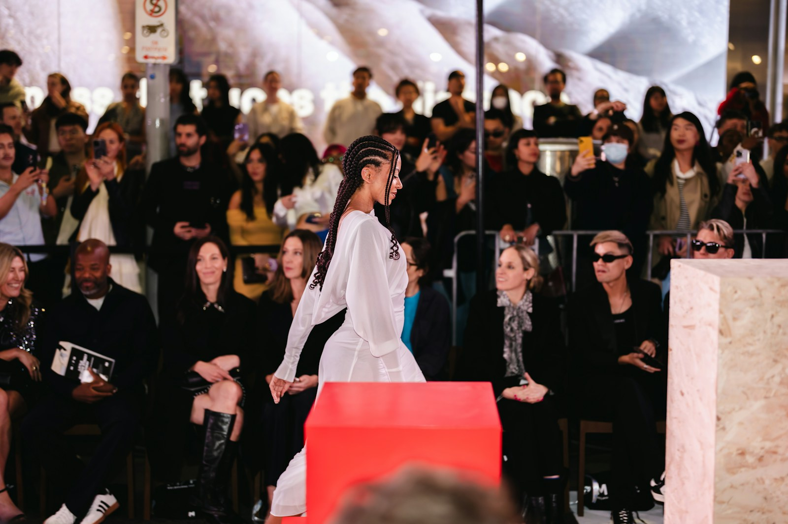

The gallery
Garments, drawings, cloth and the studio that makes them.
Work, process and performance.
Browse by category, or open any image to view it larger.
Showing all 23 images.
Imagery is licensed editorial photography used to illustrate each category. It is not presented as the work of identified ATELIER ÉLAN students.
Made in the studio.
Garments, drawings, cloth and the rooms they come from.
No pieces in this category yet.
From first sketch to finished garment.
Six stages, documented where they happen: the desk, the cutting table, the sewing room and the fitting.
-
Every garment begins on paper. Mood, silhouette and proportion are worked out in sketchbooks long before any cloth is cut.
Plate 1.1Sketching a garment at the studio table Plate 1.2Refining lines on the design sheet -
Cloth decides what a design can become. Students handle, test and compare weaves, weights and finishes before they commit.
Plate 2.1Material samples laid out for selection Plate 2.2Texture and finish, up close Plate 2.3Folded wools and suitings -
The drawing becomes flat pattern pieces, cut with care. Precision at this stage saves every stage after it.
Plate 3.1Cutting with a craft knife Plate 3.2Swatch cards for the cutting table -
In the sewing room, seams, hems and closures are learned by repetition, with a mentor close at hand.
Plate 4.1At the work station Plate 4.2The needle, close up -
Critiques, shared tables and second opinions: designers learn as much from one another as from their mentors.
Plate 5.1Designing and sewing side by side Plate 5.2The studio floor -
Trims are set, edges finished and garments pressed. The last details are the ones the audience sees.
Plate 6.1Hand-finishing a red trim Plate 6.2Silk, pressed and ready
On the runway and beyond.
An exhibition in four rooms: the runway, the collections, the editorial portrait and the events around them.
Runway Presentations
Full-length shows, with lighting, styling and music built around the collection.
Student Collections
Capsule collections shown as a body of work: one idea, several silhouettes.
Editorial & Styling
Finished garments photographed and styled for the portfolio.
Events & Exhibitions
Shows, openings and the moments around them.
Make work worth showing.
See the programmes behind the pieces, or talk to admissions about starting yours.